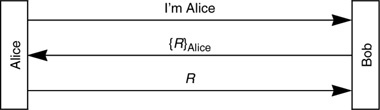

Networking Security Networking Security Networking Security Security Networking Security Networking Security Networking Charlie Kaufman Radia Perlman Mike Speciner Prentice Hall Network Security: Private Communication in a Public World, Second Edition Networking Security Networking Security Networking Security Security Networking Security Networking Security Networking Charlie Kaufman Radia Perlman Mike Speciner Prentice Hall Network Security: Private Communication in a Public World, Second Edition
11.1. Login Only
A lot of existing protocols were designed in an environment where eavesdropping was not a concern (rightly or wrongly), and bad guys were (rightly or wrongly) not expected to be very sophisticated. The authentication in such protocols generally consists of:
Alice (the initiator) sends her name and password (in the clear) across the network to Bob. Bob verifies the name and password, and then communication occurs, with no further attention to securityÂno encryption, no cryptographic integrity protection.
A very common enhancement to such a protocol is to replace the transmission of the cleartext password with a cryptographic challenge/response. First we'll discuss protocols based on shared secrets, using either secret key cryptographic algorithms or message digest algorithms. Then we'll discuss similar protocols using public key technology.
11.1.1. Shared Secret
The notation f(KAlice-Bob,R) means that R is cryptographically transformed, somehow, with Alice and Bob's shared secret KAlice-Bob. This could be done by using KAlice-Bob as a secret key in some algorithm such as DES or AES, and using KAlice-Bob to encrypt R. Or it could be done by hashing R and KAlice-Bob, for instance by concatenating R and KAlice-Bob and computing a message digest on the result. When we explicitly mean encryption with KAlice-Bob we'll write KAlice-Bob{R}. When we explicitly mean a hash, we'll write h(KAlice-Bob,R) or hash(KAlice-Bob,R).
Consider Protocol 11-1. An eavesdropper will see both R and f(KAlice-Bob,R). It is essential that seeing the pair does not enable the eavesdropper to derive KAlice-Bob.
This protocol is a big improvement over passwords in the clear. An eavesdropper cannot impersonate Alice based on overhearing the exchange, since next time there will be a different challenge. However, there are some weaknesses to this protocol:
Authentication is not mutual. Bob authenticates Alice, but Alice does not authenticate Bob. If Trudy can receive packets transmitted to Bob's network address, and respond with Bob's network address (or through other means convince Alice that Trudy's address is Bob's), then Alice will be fooled into assuming Trudy is Bob. Trudy doesn't need to know Alice's secret in order to impersonate BobÂshe just needs to send any old number R to Alice and ignore Alice's response. If this is the entire protocol (i.e., the remainder of the conversation is transmitted without cryptographic protection), then Trudy can hijack the conversation after the initial exchange, assuming she can generate packets with Alice's source address. It's also useful to Trudy, but not absolutely essential, that she be able to receive packets transmitted to Alice's network layer address. (See Homework Problem 1.) An eavesdropper could mount an off-line password-guessing attack (assuming KAlice-Bob is derived from a password), knowing R and f(KAlice-Bob,R). (Recall that an off-line password-guessing attack is one in which an intruder captures information against which passwords can be tested in private, so in this context it means guessing a password, turning that password into a key K, and then seeing whether f(K,R) equals f(KAlice-Bob,R).) Someone who reads the database at Bob can later impersonate Alice. In many cases it is difficult to protect the database at Bob. There might be many servers where Alice uses the same password, and although the administrators of most of the servers might be very conscientious about security (not letting unauthorized people get near their machines, and enforcing unguessable passwords), it only takes one unprotected server for an intruder to read the relevant information. Furthermore, protecting the database implies protecting all the backup media as well, by either preventing access to it (locking it in a safe) or encrypting the contents and somehow protecting the key with which it was encrypted.
Despite these drawbacks, if there are limited resources available for adding security, replacing the cleartext password transmission is the single most important security enhancement that can be done.
A minor variant on Protocol 11-1 is the following:
In this protocol Bob chooses a random challenge R, encrypts it, and transmits the result. Alice then decrypts the received quantity, using the secret key KAlice-Bob to get R, and sends R to Bob. This protocol has only minor security differences from Protocol 11-1:
This protocol requires reversible cryptography, for example a secret key cryptographic algorithm. Protocol 11-1 can be done using a hash function. For example, f(KAlice-Bob,R) could be the message digest of KAlice-Bob concatenated with R. But in Protocol 11-2, Alice has to be able to reverse what Bob has done to R in order to retrieve R. Sometimes there is a performance advantage to being able to use one of the message digest functions rather than having to use, say, DES. Sometimes there are export issues involved in having code for encryption available, even if it's only used for authentication, whereas using a message digest function would be less likely to create export problems.
Suppose KAlice-Bob is derived from a password and therefore vulnerable to a dictionary attack. If R is a recognizable quantity, for instance a 32-bit random number padded with 32 zero bits to fill out an encryption block, then Trudy can, without eavesdropping, mount a dictionary attack by merely sending the message I am Alice and obtaining KAlice-Bob{R}. If Trudy is eavesdropping, however, and sees both R and KAlice-Bob{R}, she can mount a dictionary attack with either protocol. It is often the case that eavesdropping is more difficult than merely sending a message claiming to be Alice. Kerberos V4 (see Chapter 13 Kerberos V4) is an example of a protocol that has this security weakness. If R is a recognizable quantity with limited lifetime, such as a random number concatenated with a timestamp, Alice authenticates Bob because only someone knowing KAlice-Bob could generate KAlice-Bob{R}. To accomplish mutual authentication, R must be limited lifetime to foil the replaying of an old KAlice-Bob{R}.
Another variant on Protocol 11-1 is to shorten the handshake to a single message by having Alice use a timestamp instead of an R that Bob supplies:
This modification requires that Bob and Alice have reasonably synchronized clocks. Alice encrypts the current time. Bob decrypts the result and makes sure the result is acceptable (i.e., within an acceptable clock skew). The implications of this modification are:
This modification can be added very easily to a protocol designed for sending cleartext passwords, since it does not add any additional messagesÂit merely replaces the cleartext password field with the encrypted timestamp in the first message transmitted by Alice to Bob. The protocol is now more efficient. It goes beyond saving two messages. It means that a server, Bob, does not need to keep any volatile state (such as R in Protocol 11-1) regarding Alice (but see next bullet). This protocol can be added to a request/response protocol (such as RPC) by having Alice merely add the encrypted timestamp into her request. Bob can authenticate the request, generate a reply, and forget the whole thing ever happened. Someone eavesdropping can use Alice's transmitted KAlice-Bob{timestamp} to impersonate Alice, if done within the acceptable clock skew. This threat can be foiled if Bob remembers all timestamps sent by Alice until they "expire" (i.e., they are old enough that the clock skew check would consider them invalid). Another potential security pitfall occurs if there are multiple servers for which Alice uses the same secret KAlice-Bob. Then an eavesdropper who acts quickly can use the encrypted timestamp field Alice transmitted, and (if still within the acceptable time skew) impersonate Alice to a different server. This can be foiled by concatenating the server name in with the timestamp. Instead of sending KAlice-Bob{timestamp}, Alice sends KAlice-Bob{"Bob" | timestamp}. That quantity would not be accepted by a different server. If our bad guy Trudy can convince Bob to set his clock back, she can reuse encrypted timestamps she had overheard in what is now Bob's future. In practice there are systems that are vulnerable to an intruder resetting the clock. Although it might be obvious that a password file would be something that needed to be protected, if the security protocols are not completely understood, it might not be obvious that clock-setting could be a serious security vulnerability. If security relies on time, then setting the time will be an operation that requires a security handshake. A handshake based on time will fail if the clocks are far apart. If there's a system with an incorrect time, then it will be impossible to log into the system in order to manage it (in order to correct its clock). A plausible solution to this is to have a different authentication handshake based on challenge/response (i.e., not dependent on time) for managing clock setting.
In Protocol 11-1, computing f(KAlice-Bob,R). may be done with a secret key encryption scheme using KAlice-Bob as a key, or by concatenating KAlice-Bob with R and doing a hash. When we're using timestamps the same is true (a message digest works), except for a minor complication. How does Bob verify that hash(KAlice-Bob,R) is reasonable? Suppose the timestamp is in units of minutes, and the believable clock skew is 10 minutes. Then Bob would have to compute hash(KAlice-Bob, timestamp) for each of the twenty possible valid timestamps to verify the value Alice sends (though he could stop as soon as he found a match). With a reversible encryption function, all he had to do was decrypt the quantity received and see if the result was acceptable. While checking twenty values might have acceptable performance, this approach would become intolerably inefficient if the clock granularity allows a lot more legal values within the clock skew. For instance, the timestamp might be in units of microseconds. There are 600 million valid timestamps within a five-minute clock skew. This would be unacceptably inefficient for Bob to verify. The solution (assuming you wanted to use a microsecond clock and a hash function rather than a reversible encryption scheme) is to have Alice transmit the actual timestamp unencrypted, in addition to transmitting the hashed value. So the protocol would be:
11.1.2. One-Way Public Key
With protocols in the previous section, which are based on shared secrets, Trudy can impersonate Alice if she can read Bob's database. If the protocols are based on public key technology instead, this can be avoided, as in Protocol 11-5.
In this case [R]Alice means that Alice signs R (i.e. transforms R using her private key). Bob will verify Alice's signature [R]Alice using Alice's public key, and accept the login if the result matches R. This is very similar to Protocol 11-1. The advantage of this protocol is that the database at Bob is no longer security-sensitive to an attacker reading it. Bob's database must be protected from unauthorized modification, but not from unauthorized disclosure.
And as before, the same minor variant works:
In this variant, Bob chooses R, encrypts it using Alice's public key, and Alice proves she knows her private key by decrypting the received quantity to retrieve R. A problem with this variant is that some public key schemes (such as DSS) can only do signatures, not reversible encryption. So in those cases this variant cannot be used.
In both Protocol 11-5 and Protocol 11-6 there is a potential serious problem. In Protocol 11-5 you can trick someone into signing something. That means, if you have a quantity on which you'd like to forge Alice's signature, you might be able to impersonate Bob's network address, wait for Alice to try to log in, and then give her the quantity as the challenge. She'll sign it, and now you know her signature on that quantity. Protocol 11-6 has Alice decrypting something. So, if there's some encrypted message someone sent to Alice and you're wondering what's in it, you might again impersonate Bob's address, wait for Alice to log in, and then have Alice decrypt it for you.

How can we avoid getting in trouble? The general rule is that you should not use the same key for two different purposes unless the designs for all uses of the key are coordinated so that an attacker can't use one protocol to help break another. An example method of coordination is to ensure that R has some structure. For instance, if you sign different types of things (say an R in a challenge/response protocol versus an electronic mail message), each type of thing should have a structure so that it cannot be mistaken for another type of thing. For example, there might be a type field concatenated to the front of the quantity before signing, with different values for authentication challenge and mail message. Part of the purpose of the PKCS standards (see §6.3.6 Public-Key Cryptography Standard (PKCS)) is to impose enough structure to prevent this sort of problem when the same RSA key is used for different purposes.
Note the chilling implicationÂyou can design several schemes where each is independently secure, but when you use more than one, you can have a problem. Perhaps even more chilling, you could design a new protocol whose deployment would compromise the security of existing schemes (if the new protocol used the same keys).
|